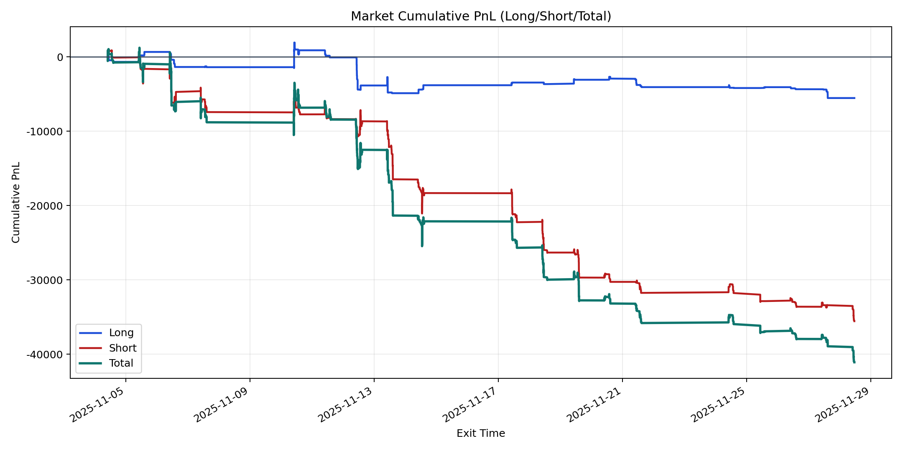
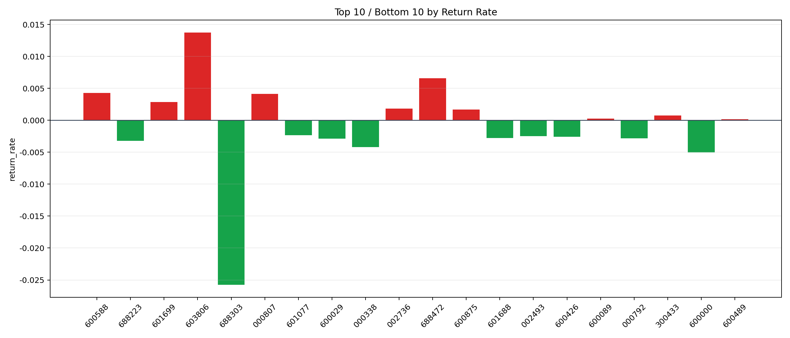

| repo_root | /home/haoranyou/data/output/dynamic_AUM_TAKER_index300 |
|---|---|
| period_months | 1 |
| period_label | 2025-11-04_to_2025-11-28 |
| start_time | 2025-11-04 10:01:43 |
| end_time | 2025-11-28 11:18:37 |
| n_trades | 2471 |
| n_symbols | 40 |
| total_pnl | -41095.562900000274 |
| long_total_pnl | -5530.071649999805 |
| short_total_pnl | -35565.491250000465 |
| total_entry_notional | 43208973.0 |
| long_entry_notional | 9107412.0 |
| short_entry_notional | 34101561.0 |
| total_return_rate | -0.0009510886292067223 |
| long_return_rate | -0.0006072056090138236 |
| short_return_rate | -0.0010429285407198945 |
| top_symbols_by_return | ["603806", "688472", "600588", "000807", "601699", "002736", "600875", "300433", "600089", "600489"] |
| bottom_symbols_by_return | ["688303", "600000", "000338", "688223", "600029", "000792", "601688", "600426", "002493", "601077"] |

